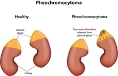

Pheochromocytomas

SYMPTOMS:
- High blood pressure
-
Headache
-
Heavy sweating
-
Rapid heartbeat
-
Tremors
-
Paleness in the face
-
Shortness of breath
-
Panic attack-type symptoms
CAUSES
- Researchers don't know exactly what causes a pheochromocytoma. The tumor develops in specialized cells, called chromaffin cells, located in the center of an adrenal gland. These cells release certain hormones, primarily adrenaline (epinephrine) and noradrenaline (norepinephrine), that help control many body functions, such as heart rate, blood pressure and blood sugar.
DIAGNOSIS
- 24-hour urine test. In this test, you collect a urine sample every time you urinate during a 24-hour period. Ask for written instructions about how to store, label and return the samples.
-
CT scan, a specialized X-ray technology
MRI, which uses radio waves and a magnetic field to produce detailed images
-
M-iodobenzylguanidine (MIBG) imaging, a scanning technology that can detect tiny amounts of an injected radioactive compound taken up by pheochromocytomas or paragangliomas
-
Positron emission tomography (PET), a scanning technology that also can detect radioactive compounds taken up by a tumor
-
Blood test. Your doctor draws blood to be tested in the lab.
TREATMENT
- Alpha blockers. These drugs keep smaller arteries and veins open and relaxed, improving blood flow and decreasing blood pressure. Alpha blockers include phenoxybenzamine, doxazosin (Cardura) and prazosin (Minipress). Side effects might include irregular heartbeat, dizziness, fatigue, vision problems, sexual dysfunction in men and swelling in the limbs.
-
Beta blockers. These drugs cause your heart to beat more slowly and with less force. They also help keep blood vessels open and relaxed. In your surgery preparation, your doctor will likely prescribe a beta blocker several days after starting the alpha blocker.
-
Beta blockers include atenolol (Tenormin), metoprolol (Lopressor, Toprol-XL) and propranolol (Inderal, Innopran XL). Possible side effects include fatigue, upset stomach, headache, dizziness, constipation, diarrhea, irregular heartbeat, difficulty breathing and swelling in the limbs.
-
High-salt diet. Alpha and beta blockers widen the blood vessels, causing the amount of fluid within the blood vessels to be low. This can cause dangerous drops in blood pressure with standing. A high-salt diet will draw more fluid inside the blood vessels, preventing the development of low blood pressure during and after surgery.